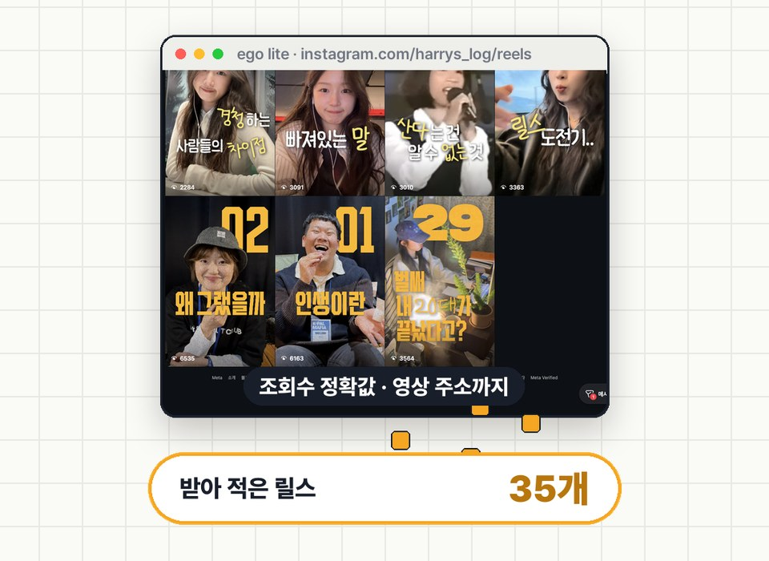
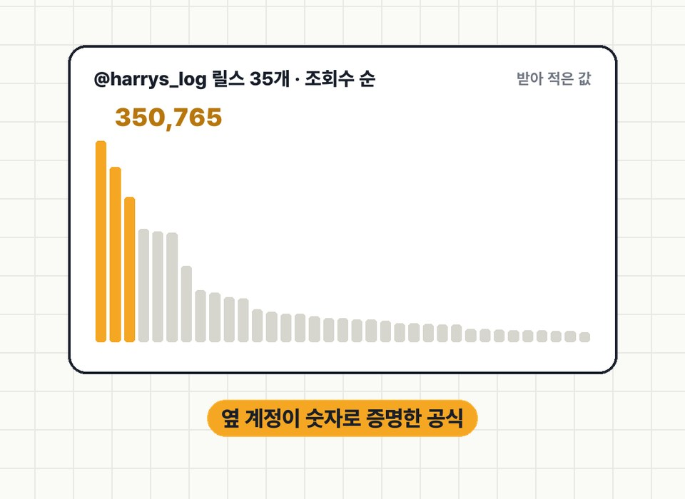

터진 공식 따라 했는데
왜 내 건 안 터질까
인플루언서가 알려 주는 릴스 공식은 그 사람 카테고리, 그 사람 무드에서 터진 거예요. 그래서 나랑 카테고리도 무드도 비슷한 계정 3곳의 릴스 조회수를 ego lite로 받아 적고, 조회수 구간별로 시작 3초를 비교해 봤어요.
01남의 공식이 내 계정에서 안 터지는 이유
"첫 3초 강한 훅, 자막 크게, 트렌드 음악" 같은 공식은 틀린 말이 아니에요. 다만 그 공식이 터진 건 그 사람의 카테고리(라이프 · 육아 · 재테크…)와 그 사람의 무드(얼굴 토크 · 유쾌 · 감성…) 위에서예요. 카테고리와 무드가 다르면 같은 공식도 다르게 먹혀요.
① 주제가 같거나 바로 옆(마케팅 · 콘텐츠 · 재테크 정보형 등) ② 형식·무드가 비슷(얼굴 토크인지, 화면 시연인지, 무음 텍스트인지) ③ 팔로워 규모가 나보다 너무 크지 않은 곳(1만~수십만). 너무 큰 계정은 '계정 힘'으로 터진 영상이 섞여요.
02그냥 AI한테 시키면 막혀요
"이 계정 릴스 조회수 다 모아 줘"라고 시키면, AI가 인스타를 직접 불러오다 막혀서 빙빙 돌기 쉬워요. 인스타는 로그인 없이 보거나 프로그램으로 데이터를 직접 부르면 막는 편이에요. 이번에도 브라우저 안에서 직접 불러오는 방법은 요청 제한(429)에 걸렸어요.
ego lite는 AI가 쓰는 브라우저예요(EP.01 · EP.02). 내가 로그인해 둔 브라우저에서 AI가 릴스 탭을 사람처럼 스크롤하고, 그때 페이지로 이미 들어오는 데이터를 중간에서 받아 적어요. 새로 요청을 보내지 않으니 막힐 일이 적고, 화면의 "35만" 대신 350,765처럼 정확한 값과 영상 주소까지 남아요.

03바로 쓰는 프롬프트
ego lite를 설치하고 인스타에 로그인해 둔 뒤, Claude Code에 붙여 넣어요(설치는 EP.02). 계정마다 한 번씩 돌려요.
ego lite로 https://www.instagram.com/[계정]/reels/ 를 열어 줘. 1. 페이지를 열기 전에, 페이지가 받아 오는 응답(fetch · XHR)을 읽어서 릴스마다 code · 조회수(play_count) · 좋아요 · 댓글 수 · 게시일 · 영상 주소를 기록하는 훅을 넣어 줘. 새 요청은 보내지 말고, 페이지가 원래 받는 데이터만 읽어. 2. 사람이 보는 속도로 천천히 스크롤해서 최근 릴스 [30~50]개까지만 받아 적어 줘. 3. 결과는 조회수 순으로 정렬해서 CSV로 저장해 줘. (code · 조회수 · 좋아요 · 댓글 · 게시일 · 몇 주 전 · 영상 주소) 4. 댓글 단 사람 아이디 같은 개인정보는 저장하지 마.
첨부한 CSV는 나랑 카테고리·무드가 비슷한 계정 [3]곳의 최근 릴스예요. 1. 계정마다 조회수 중앙값을 구하고, 릴스를 중앙값 대비 [3배 이상 / 1~3배 / 중앙값 아래]로 나눠 줘. 2. 각 릴스의 첫 3초를 정리해 줘: 첫 마디(받아쓰기) · 첫 화면 글자 · 화면에 뭐가 보이는지 · 말투(질문형 / 손해·경고형 / 내 얘기 / 결과 먼저). 3. 구간별로 공통점과 차이를 표로 정리하고, 계정 차이 때문일 수 있는 건 따로 표시해 줘. 4. 마지막으로 내 계정([내 계정 형식: 예) 얼굴 없음 · 화면 시연 · 나레이션])에 옮길 수 있는 것만 골라 줘. 게시 1주 미만 릴스는 아직 집계 중이니 따로 표시해 줘.
💡 영상 첫 3초 받아쓰기는 영상 주소로 소리를 받아 Whisper 같은 받아쓰기 도구로 돌리면 돼요. 무음 릴스는 받아쓰기가 음악 위에 문장을 지어낼 수 있으니, 첫 화면 글자로 판단하세요.
04이번 편 결과
@dongeun_bubu · @harrys_log · @blabla_lizzypark 세 계정의 릴스 118편을 받아 적어 조회수 구간별로 비교했어요(2026-10-18 수집).

50만이 넘은 3편은 첫 문장이나 첫 화면이 모두 시청자 본인 상황이었어요(얼굴 노출 고민 · 연봉 기준에 걸린 신혼부부 · 1억 모으는 소비 습관). 1만 미만 19편은 근황 · 일상 · 친구 소개처럼 내 얘기로 시작했어요. 단, 50만+는 한 계정, 1만 미만은 다른 한 계정이라 계정 차이도 섞여 있어요.
"~이신가요?" 질문형 5편은 모두 그 계정 중앙값 아래였어요. 손해·경고로 시작한 편은 상위 11편 중 5편, 하위 11편 중 1편이었어요.
툴 협찬 릴스 중앙값 6.9만 vs 나머지 11.2만. 155만 릴스도 툴은 '방법'으로만 나왔어요.
한 계정은 30초 이하 11편 중앙값 6.6만 vs 30초 초과 2.9만. 다른 계정은 길이와 성과가 무관했어요. 이것도 계정마다 달라요.
이 결과는 세 계정의 공식이에요. 내 카테고리 공식은 내 옆 계정으로 직접 뽑아 보세요.
05써 보기 전에 꼭
- 인스타 약관은 허락 없는 자동 수집을 막고 있어요. 공개 계정 몇 곳, 최근 30~50개만, 사람이 보는 속도로, 내 콘텐츠 기획을 위한 개인 리서치에만 쓰세요.
- 개인정보는 모으지 마세요. 댓글 단 사람 아이디 · 프로필 사진은 저장하지 않아요.
- 남의 영상을 내려받아 다시 올리거나 그대로 따라 만들지 마세요. 첫 3초의 '구조'만 참고하세요.
- 조회수는 받아 적은 시점의 값이에요. 오래된 영상일수록 쌓일 시간이 길었고, 1주 안 된 영상은 아직 집계 중이에요.
- 계정이 적으면 계정 차이가 패턴처럼 보일 수 있어요. 같은 계정 안에서도 성립하는지 한 번 더 보세요.
06출처
- 분석 대상 공개 계정(2026-10-18 수집): @dongeun_bubu · @harrys_log · @blabla_lizzypark
- Instagram 이용 약관
- ego lite — citrolabs (EP.01에서 소개)
대행사에서 AI 교육하는 현직 마케터가 직접 써 보고 정리해요.
인스타에서 팔로우